hulatu.com · hugo-bearneo 试运行站 · 2026-10-10
两件事：把 yinji.org 的设计拿来当参照，改一版 Bear Neo；把你原来博客的 giscus 评论区接回来。
都在 ~/bearneo-trial/ 这个试运行站上真的做了、真的构建了、真的截图了。上游主题 28 个文件仍然一个字节没改。
抓 yinji.org 的首页、文章页、列表页下来，发现三页的内联 <style> 逐字节相同（10,671 字节），
而且这份 CSS 的 :root 变量块和上游 layouts/partials/style.html 长得一模一样 —— 到这一步基本可以确定是同一套代码。
页脚的 "Made with Hugo Bear Neo" 是最后的确认。
于是问题就从「怎么做出 yinji 那样的设计」变成了更具体的一句：它相对上游到底改了哪几行？
把两边的 CSS 去注释、归一空白后按规则切开比对：上游 67 条规则，它 70 条。差异如下 ——
| # | 位置 | 上游 | yinji |
|---|---|---|---|
| 1 | --font-primary | Verdana, sans-serif | "Verdana","PingFang SC", sans-serif |
| 2–6 | 新增 5 条 .recent-posts* | （无） | 首页「最近更新」列表的网格布局 |
| 7 | content ul, content olcontent ul ul, … | padding-left:1.5empadding-left:1.5em | 被删掉了 |
| 8 | a:hover | 多一行 text-underline-offset:3px | 去掉 |
第 7 条我认为是它的失误，所以没跟着学。那两条规则负责正文里列表的缩进层级 —— 删掉之后，
普通列表还能靠浏览器默认的 padding-inline-start:40px 撑着，但嵌套列表就没有层级了，上下级会从同一条竖线开始。
你的文章里嵌套列表不少（隐私政策那页就有），我原样保留了这两条，并在补丁样式里写了注释说明「别跟着删」。
另外三条值得单独说，因为它们是「看起来变了、其实没变」的部分：
color: transparent，不悬停完全看不见，和上游一样。--width-max: 720px，配色令牌一个没动。模板侧也只有两处：layouts/index.html 从 {{ .Content }} 扩成「正文 + <hr> + Recent Posts 列表」，
以及导航加了两项。首页那段自我介绍全写在 _index.md 里，模板不掺内容 —— 这一点我照抄了。
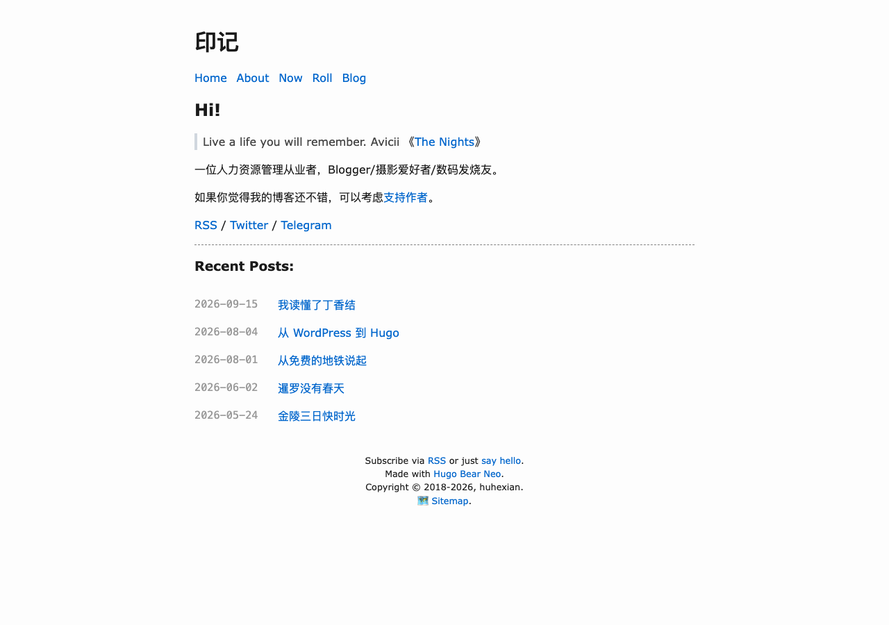
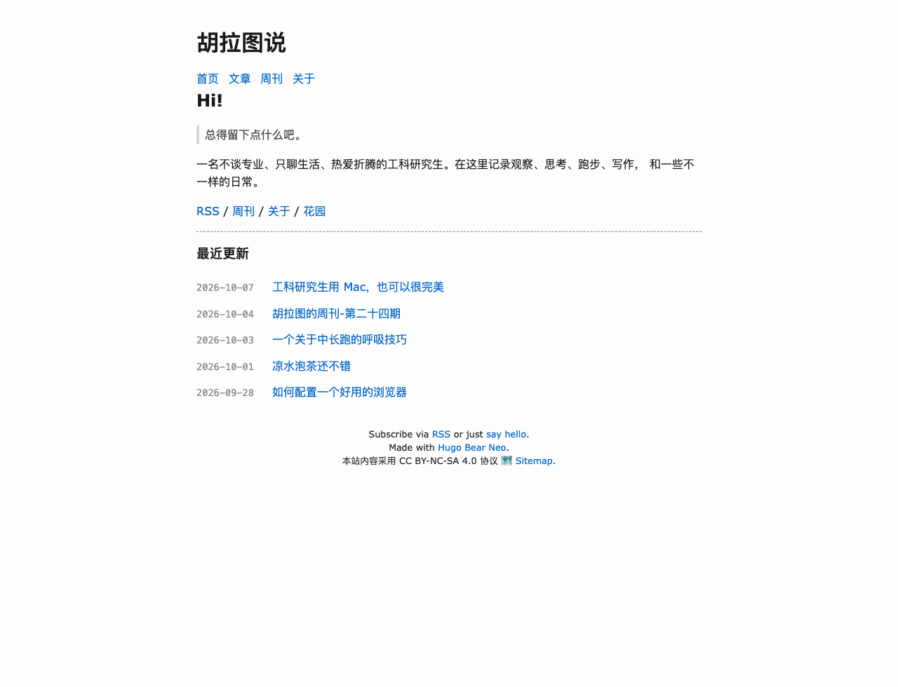
不是照抄。下面每一条都标了出处和理由 —— 凡是我自己加的、yinji 没有的，都写明了。
上游首页只有 {{ .Content }}，等于一句 tagline 加一片空白 —— 打开 hulatu.com 看不到任何文章入口。
借它的做法：正文之后接 <hr> + 「最近更新」列表。
文案全在 content/_index.md；条数走 params.homeRecentCount，设 0 就退回上游原样（只有站名 + 一句话）。
上游是 Verdana, sans-serif。Verdana 不含汉字，中文其实一直是浏览器兜底 ——
在 macOS 上看不出差别，在 Windows / Android 上可能落到宋体或旧版思源黑。
照抄它的做法，并补全跨平台回退：Verdana, "PingFang SC", "Hiragino Sans GB", "Microsoft YaHei", "Source Han Sans SC", "Noto Sans CJK SC", sans-serif
它写的是 grid-template-columns: 120px 1fr —— 定宽日期列不参与内容竞争，标题永远从同一条竖线开始。
比上游列表页那个 flex: 0 0 80px 稳。
我用 104px（你的日期是 ISO 的 10 字符，120px 会留下过宽的缝）；日期颜色用它没做的 var(--text-color-tertiary)，不用它写死的 #999 —— 后者在暗色主题下对比度不够。
我一度改成 1.78 —— 理由站得住：上游的 1.6 是给西文定的，拉丁字母有小写字母高度做视觉补偿， 中文方块字没有，1.6 读长文偏挤，中文正文的舒适区在 1.75–1.9。但这条不是 yinji 的做法（它仍是 1.6）。
你选了「和参考站一致」，所以补丁里不再覆盖 line-height，
正文行高由上游 style.html 的 content { line-height: 1.6 } 提供。
那一组规则现在只剩 text-autospace 一条 —— 构建产物里已验证：content{line-height:1.6} 与
content{text-autospace:normal} 两条并存，1.78 全站 0 次。
你的文章里「用 Mac」「跑 43 Km」这种中英夹写非常多。上游没有处理，全靠手动敲空格。
text-autospace: normal —— 浏览器原生的「盘古之白」，Chrome 128+ / Safari 18+ 支持；不支持的浏览器只是不加空隙，不会坏。
上游的设计是文字 color: transparent，只留一排灰色短横 —— 极简，但代价是读者根本不知道那里有目录，也就永远悬停不到。
改成：文字低对比度常显，悬停 / 当前项高亮，短横退成更浅的装饰色。下面是同一篇文章的对照。
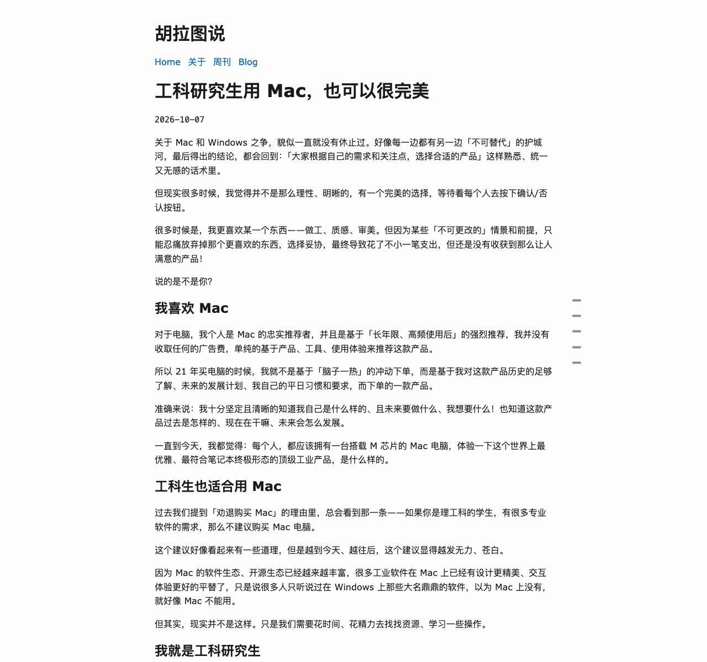
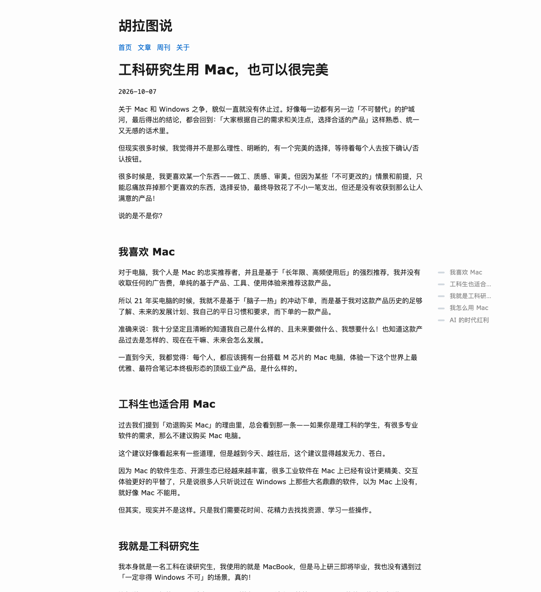
上游把全部标签平铺在列表页底部。你有 184 个标签，铺出来是五屏的蓝色链接墙，比正文还长。
我先把它收成 20 个 + 一个「全部 184 个标签 →」入口，并给 /tags/ 做了一张标签云。
你决定标签云不留，所以两处一起删：列表页底部那块整块去掉（文章列表之后直接进页脚），
/tags/ 那一页用 disableKinds = ["taxonomy"] 关掉。
关掉的是 taxonomy 列表页（/tags/ 和 /categories/，共少 2 页）；
/tags/xxx/ 词条页是 kind term，仍然生成 —— 所以文章下方那 331 个标签链接全部有效，实测 0 断链。
想连词条页一起关（再少 184 页，就是参考站 yinji.org 的做法），把那一行改成 disableKinds = ["taxonomy", "term"]。
改完头像后我做了一次全站链接体检，发现 /about/ 的「网站导览」列了 8 个栏目，
5 个在试运行站里根本不存在：归档 /archive/、分类 /categories/、
标签 /tags/、友链 /friends/、书影音 /media/。
其中 /categories/ 和 /tags/ 是我这一轮关掉分类法时弄断的；
另外三个是迁移时就断的 —— 它们的实现都在你自建主题里，上游没有，这次没搬。
已把导览收敛成实际存在的四项（首页 / 文章 / 周刊 / 花园），并在 about.md 里留了一段注释，
写清哪几项被拿掉、为什么。全站复扫：4059 个站内链接，真实断链 0 个
（剩下 4 条是 <link rel=canonical> 和外链图床的误报）。
上游 span.grouped { flex: 0 0 80px } 是按它默认的 "02 Jan."（7 字符）定的。
你换成 ISO 的 2006-01-02（10 字符）就装不下了 —— 101 行列表每一行都折成两行。
改成按内容定宽 + white-space: nowrap，不再依赖具体日期格式。
上游把 Home 和 Blog 写死在 nav.html 里，Blog 还排在菜单之后 ——
于是读作「Home 关于 周刊 Blog」，一个指首页、一个指文章列表，语义打架还隔着两项。
顺序改成 首页 / 文章 / 周刊 / 关于，文案中文化。逻辑一字未改（外部链接新开窗口那套照旧）。
上游没有头像这个概念 —— 只有 <h1>{{ .Site.Title }}</h1> 一个文字字标，连 params.avatar 都不存在。
你最初点名要迁头像，所以我加了一版：header.html 里塞一个 44px 圆形 <img>，用 flex 与站名排成一行。
后来你要求「把首页的图片去掉 / 全站都去掉」，于是这一版整个撤掉：
layouts/partials/header.html 文件删除了（去掉 img 块后它与上游逐字节相同，留着就是空壳），
随它一起删的还有 .title / .title h1 / .site-avatar 三组规则和 params.avatar 这个键。
现在首页一个 <img> 都没有（全站 site-avatar 出现 0 次），页头完全等于上游。
副作用：<h1> 恢复了上游的 margin: 16px 0，页头比带头像时高约 32px。
想要紧一点的页头，加回 .title { display:flex } .title h1 { margin:0 } 就行。
关于页正文里那张 120px 头像不受影响（它在 content/about.md 里，不在页头）。
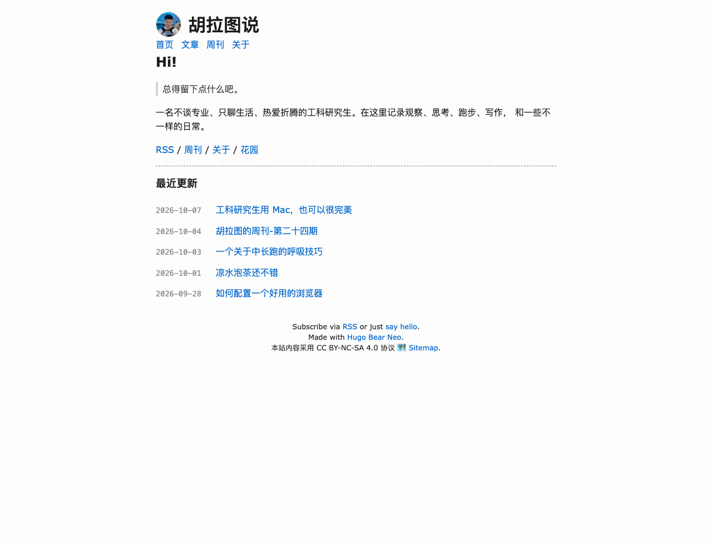
上游页脚是三行：订阅提示、Made with Hugo Bear Neo、最后一行 —— 最后一行由
params.copyright 原样输出，紧接着就是 🗺️ Sitemap，两者共用同一行，
中间只有一个模板换行（HTML 会折成一个空格），没有任何可配置的分隔符。
你要的是两行：Copyright © 2025-2026, hulatu. / 本站内容采用 CC BY-NC-SA 4.0 协议 🗺️ Sitemap.
所以这里做了一件事 —— 在站点层覆盖 partials/footer.html，在版权行之后补一个 <br />，
并把授权说明从 copyright 里拆出来成为独立参数 copyrightNote。
其余三个开关（hideRSSAndEmail / hideMadeWithLine / hideSitemap）与上游逐字一致。
顺带一个很容易踩的坑：params.copyright 是文本节点输出，
Go 的 html/template 会转义 & —— 必须写真正的 © 字符，
写成 HTML 实体 © 会被转义成 &copy;，页面上原样显示成 "©" 这六个字符。
（也正因为是文本节点，<br> 塞进参数里是没用的，会被转义 —— 只能改模板。）
验证：323 个 HTML 产物里，两行文字各出现 323 次，两行之间确有 <br> 的 323 个，
含被转义 &copy; 的 0 个。站点层覆盖文件从 9 个增加到 10 个。
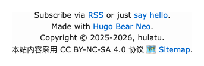
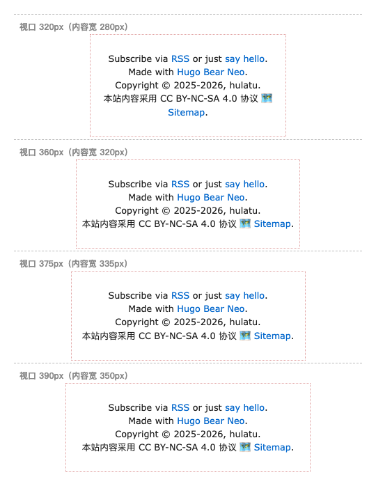
第二行 本站内容采用 CC BY-NC-SA 4.0 协议 🗺️ Sitemap. 本身宽约 343px，
而 320px 视口扣掉 body 的 40px 内边距后只剩 280px，装不下 ——
于是它会在空格处再折一次，页脚变成三行：
本站内容采用 CC BY-NC-SA 4.0 协议 🗺️ Sitemap.
这是内容本身的长度决定的，不是 bug。360px 以上（覆盖了绝大多数手机）都是稳定的两行。
真要在 320px 也保持两行，只能把授权说明删掉 —— 那样第二行就只剩 🗺️ Sitemap.。说一声我来改。
本来想用 --window-size=320,H 直接拍 320px 的页脚，结果拍出来的图右侧被裁掉。
在页面里渲染 window.innerWidth 一看：请求 320，实际 392 ——
headless Helium 把窗口宽度钳到了约 392px 的下限，更小的宽度会被静默忽略。
绕开办法：把页脚放进固定宽度的容器里（body 有 padding:20px，
所以「视口 W」对应内容宽 W−40），在同一个页面上并排模拟多档宽度，一次拍完 —— 上图就是这么来的。
关于页标题下面挂着一行 2026-08-01。它不是正文的一部分，而是渲染出来的页面日期 ——
content/about.md 的 front matter 里有 date，模板把它画成了
<time datetime=… pubdate>。
这行来自站点层 single.html。上游那版把它写死给了 blog 段，
所以 /about/ 本来根本不会显示日期；之前为了修「周刊和独立页没有标题」把外层条件去掉，
日期就跟着一起冒出来了 —— 对文章是对的，对独立页则没意义。
加了一个 front matter 开关 hideDate: true，模板里改成
{{ if and .Date (not .Params.hideDate) }}，只在 about.md 上打开它。
没有删掉 date 本身 —— <meta property="article:published_time">
之类的输出还要用它，删了会连带影响。以后 /privacy/ 想去掉也是同一个开关。
验证：全站渲染日期的页面从 127 个降到 126 个（125 篇文章 + /privacy/ 仍在，
/about/ 已不在其中）；关于页现在是 <h1>关于</h1> 直接接正文。
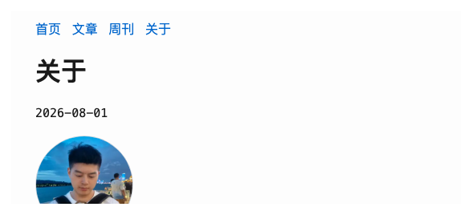
2026-08-01
1280 宽 · 关于页顶部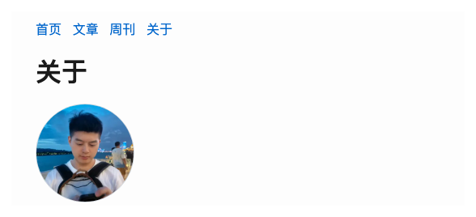
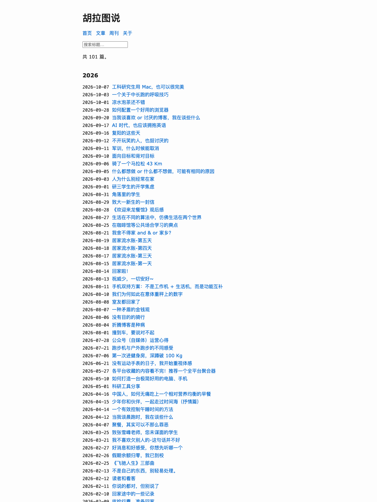
/blog/101 篇，按年分组，日期不再折行；搜索框与「共 101 篇。」中文化；底部标签墙已删
1280 × 1700 · 真渲染截图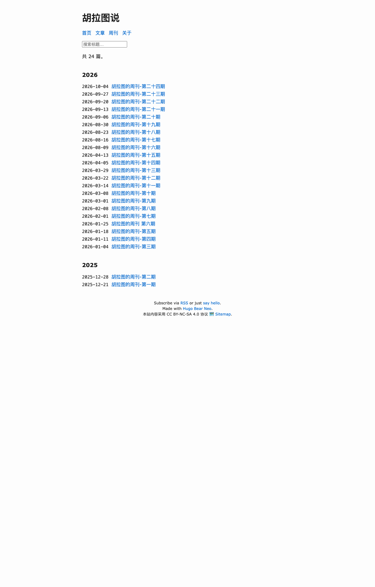
/weekly/24 期，2026 / 2025 两个年份组；文章列表之后直接进页脚（标签墙已删）
1280 × 2000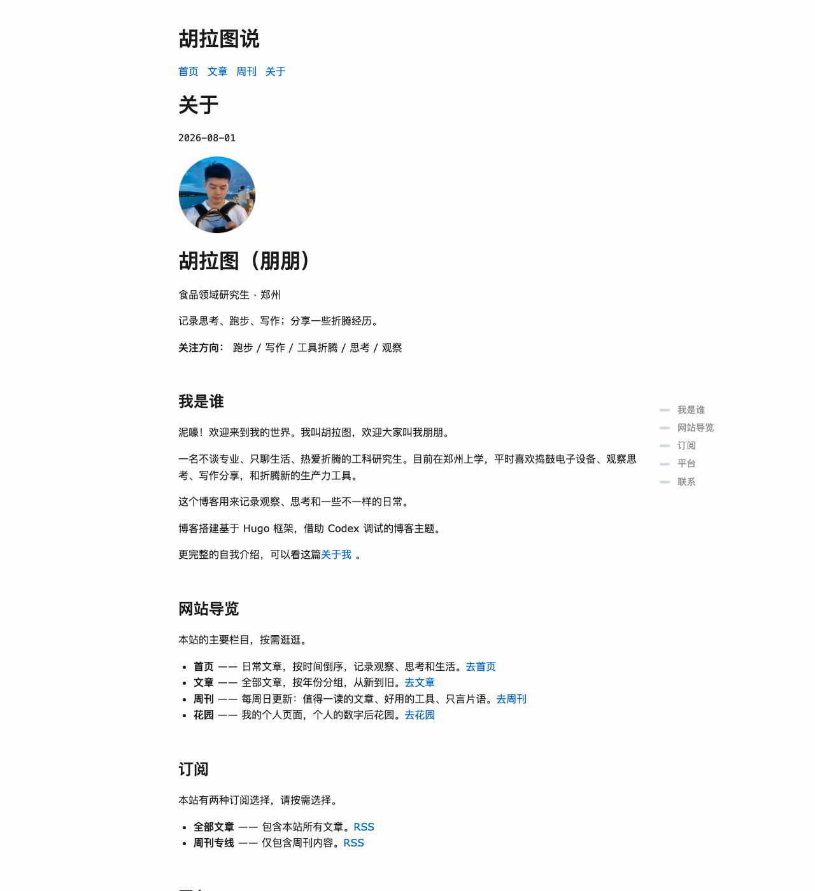
/about/正文里的 120px 头像保留（它在 markdown 里，不在页头）；「网站导览」已收敛成实际存在的四项
1280 × 1400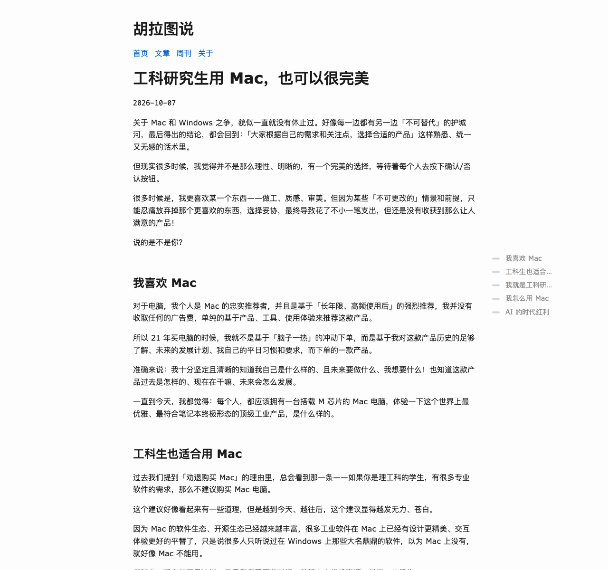
--text-color-tertiary 等），跟随系统自动切换
1280 × 1200 · prefers-color-scheme: dark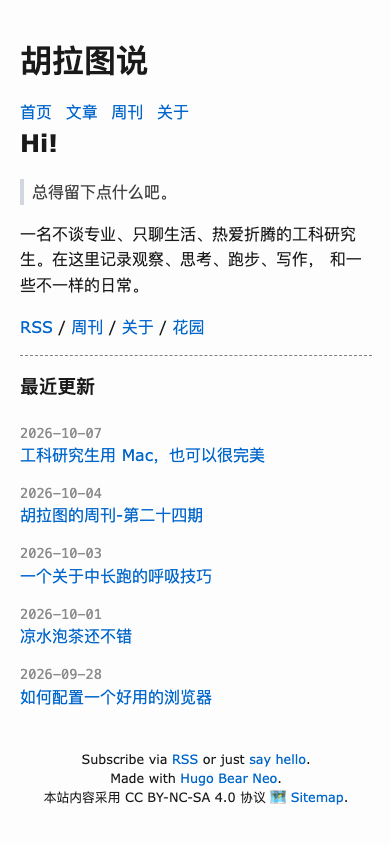
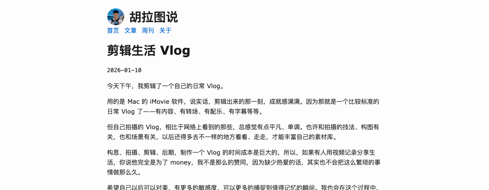
上游没有评论区。这一套是从 ~/Blog 原样移植的 —— 不是重新实现，是把
assets/js/giscus.js 整个复制过来，再把 CSS 里的令牌换成 bearneo 的。
最直接的证据：构建产物的指纹和你线上站逐字节一致。
试用站 js/giscus.min.827f9bca18b1bc4d2abbd99e4b475fa3c1e7f79faa803c6480361af7c7f057ef.js
线上站 js/giscus.min.827f9bca18b1bc4d2abbd99e4b475fa3c1e7f79faa803c6480361af7c7f057ef.js
2191 字节（gzip 1055 字节）—— 指纹相同 = 文件内容相同
接进来的不只是一个 <script>，是你在原站上做过的那一整套：
idle → loading → opening → ready → slow → open 六个状态，收起态用
max-height:0 + visibility:hidden（不是 display:none）—— iframe 始终保有布局宽度，
giscus 测算高度不会算出 0，点开才不跳动。125 页 = 101 篇文章 + 24 期周刊。
首页 / 列表 / 关于 / 隐私 / 标签页全部为 0，实测过。<link rel="preconnect"> 精确出现在同样的 125 个页面，其他页面一次多余的 DNS 都不发。giscus 的 mapping 是 pathname —— 同一个 URL 认作同一条讨论。
所以只要新站的文章 URL 和线上站逐字一致，你原来那 100 篇文章的评论会自动出现，不用做任何迁移。
试运行站的 [permalinks] 就是按你线上站的 URL 结构写的：
blog = "/posts/:year/:month/:day/:slug/"，weekly 同构。构建出来是
/posts/2026/10/07/engineering-students-use-macbook/，和线上逐字一致。
::after 画
实拍 · 1280 宽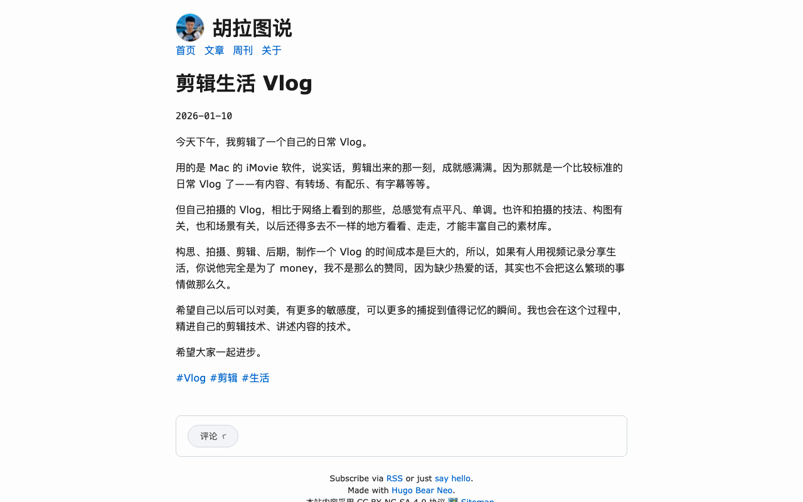
全部放在站点层（~/bearneo-trial/layouts/、assets/、content/），
上游主题那 28 个文件逐字节未改 —— 这是 Hugo 官方的覆盖机制，将来主题升级不会冲突。
| # | 文件 | 改了什么 | 来源 |
|---|---|---|---|
| 1 | hugo.toml | 新增 homeRecentCount、[params.giscus]、copyright + copyrightNote；disableKinds = ["taxonomy"] | 自己 |
| 2 | content/_index.md | 首页文案：Hi! + 引言 + 自我介绍 + 四个链接 | 借 yinji |
| 3 | content/about.md | 「网站导览」由 8 项收敛成 4 项；加 hideDate: true | 自己 |
| 4 | layouts/index.html | 正文之后接 <hr> + 最近更新列表（5 条） | 借 yinji |
| 5 | layouts/_default/baseof.html | 弃用 API 换成 .Site.Language.Locale | 自己 |
| 6 | layouts/_default/single.html | 去掉 {{ if eq .Type "blog" }} 那层；加 hideDate 开关；挂评论区 | 自己 |
| 7 | layouts/_default/list.html | 删掉底部标签墙；界面文案中文化 | 自己 |
| 8 | layouts/_default/rss.xml | 弃用 API 换成 .Site.Language.Locale | 自己 |
| 9 | layouts/partials/nav.html | 顺序与文案：首页 / 文章 / 周刊 / 关于 | 自己 |
| 10 | layouts/partials/footer.html | 版权行后补 <br />，让页脚拆成两行 | 自己 |
| 11 | layouts/partials/giscus.html | 评论区 DOM 结构 | 移植 |
| 12 | layouts/partials/custom_head.html | 设计层 7 组补丁样式（约 190 行） | 借 + 自己 |
| 13 | assets/js/giscus.js | 原样复制，未改 | 移植 |
（layouts/partials/header.html 曾经也在这一列 —— 它只为了放那个头像而存在，头像撤掉后它等于上游，已整个删除。）
第 12 项是唯一「大」的文件，但它是一整块追加的 <style>：七组补丁各自带注释说明为什么这么写。
其中三组靠 CSS 层叠压过上游的声明（标题间距、目录颜色、列表日期列），其余四组是纯新增 ——
行高已经不在覆盖之列（回到上游的 1.6）。
上游的 style.html 文件本身仍是那 67 条规则，一个字节没动 —— 想退回原样，删掉这个文件即可。
两个站同机同版本（Hugo v0.167.0 extended）各构建一次，页面 gzip 体积按「HTML + 它真正加载的外链 CSS/JS」合计。
| 页面 | 现在的站 | 试用站 | 倍数 |
|---|---|---|---|
| 首页 | 18,746 B | 5,262 B | 3.6× |
| 文章列表 | 23,578 B | 9,753 B | 2.4× |
| 文章页 | 32,496 B | 13,656 B | 2.4× |
| 关于 | 22,775 B | 5,726 B | 4.0× |
差距主要来自你现在每页内联约 39 KB critical-post.css（gzip 8 KB）+ 两个外链文件。
试用站把所有样式内联在一个 <style> 里（gzip 2.6 KB），外链 CSS 一个都没有；
唯一的 JS 是文章页的 giscus（1.1 KB gzip）。
| 构建指标 | 值 |
|---|---|
| 构建结果 | 327 页 / 0 error / 0 warning / 190 ms |
| HTML 产物 | 323 个 |
| RSS feed | 3 个（首页 + 周刊 + sitemap） |
| 外链 CSS | 0 个 |
| 外链 JS | 1 个（giscus，仅文章页） |
| giscus 挂载 | 125 页 = 101 文章 + 24 周刊 |
| 标签总数 | 184 个（词条页保留，/tags/ 索引页关闭） |
首页 <img> | 0 个 |
| 页脚版权行 | 323 / 323 两行都在，&copy; 0 处 |
| 显示日期的页面 | 126 个（125 文章 + /privacy/；/about/ 已关） |
| 站点层改动文件 | 13 个（其中 layouts/ + assets/ 覆盖文件 10 个） |
| 你的决定 | 做了什么 | 验证 |
|---|---|---|
| 行高回到 1.6 | 补丁里删掉 line-height 覆盖，保留 text-autospace |
content{line-height:1.6} 来自上游；全站 1.78 出现 0 次 |
| 首页 5 条 | homeRecentCount = 5（本来就是这个值，无需改动） |
构建产物里 .recent-posts 下 <li> 计 5 个 |
| 标签云不留 | 列表页底部标签墙整块删除；disableKinds = ["taxonomy"] 关掉 /tags/ |
全站 tag-wall / tag-cloud 出现 0 次；少 2 页 |
| 评论默认收起 | 保持原样（.giscus-body 无 .is-open 即收起） |
125 个挂评论的页面，带 is-open 的 0 个 |
| 页头头像去掉 （全站） |
删掉 header.html 覆盖文件 + 三组 CSS + params.avatar |
全站 site-avatar 出现 0 次；首页 <img> 计 0 个 |
| 页脚加版权行 并拆成两行 |
站点层覆盖 footer.html：版权行后补 <br />；授权说明拆成 copyrightNote |
323 个 HTML 两行都在、之间确有 <br>；© 0 处 |
| 关于页日期去掉 | single.html 加 hideDate 开关；about.md 里打开它（date 本身保留给 meta 用） |
显示日期的页面 127 → 126；/about/ 已不在其中 |
那个头像本来是唯一的 flex 子元素，我顺手写了 .title { display:flex } + .title h1 { margin:0 } 把站名的
16px 上下外边距归零。头像撤掉后这两条规则就没有存在理由了，一并删掉 —— 页头因此完全等于上游，
<h1> 恢复 margin: 16px 0，比之前高约 32px。
如果你觉得空得慌，加回这两条即可（一条规则、零风险）：
.title{display:flex;align-items:center} .title h1{margin:0}。说一声我来加。
现在关掉的是 taxonomy 列表页 —— /tags/ 和 /categories/ 两页没了，
但 /tags/xxx/ 那 184 个词条页仍然生成，所以文章下方的标签链接照常能用（实测 331 个链接 0 断链）。
参考站 yinji.org 的做法更狠：它连词条页一起关，一个标签页都不生成，再少 184 个页面。
代价是文章下方那些 #写作 #效率 会变成死链（或者干脆不显示）。
要走到那一步，把 hugo.toml 里那一行改成
disableKinds = ["taxonomy", "term"]，再删掉 single.html 里的标签区块即可。说一声我来改。
line-height: 1.78 就行 ——
构建产物验证过两种状态都能出 0 warning。homeRecentCount 一个数字即可，
设 0 会退回上游那个「只有站名 + 一句话」的空首页。